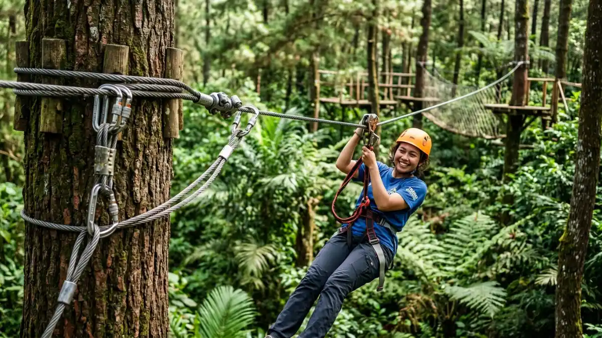

Trawas Mojokerto menawarkan belasan tempat outbound dengan fasilitas flying fox, camping ground, dan ruang meeting, cocok untuk gathering kantor, acara sekolah, hingga liburan keluarga di kaki Gunung Penanggungan.
DAFTAR ISI
- 1. Kenapa Trawas Mojokerto Jadi Pilihan Populer untuk Outbound?
- 2. Apa Saja Tempat Outbound di Trawas Mojokerto yang Direkomendasikan?
- 3. Berapa Kisaran Harga Paket Outbound di Trawas Mojokerto?
- 4. Bagaimana Cara Memilih Tempat Outbound yang Tepat di Trawas?
- 5. Apa Saja Kesalahan Umum saat Memilih Tempat Outbound?
- 6. Apa Manfaat Kegiatan Outbound bagi Peserta?
- 7. Kesimpulan
- FAQ
1. Kenapa Trawas Mojokerto Jadi Pilihan Populer untuk Outbound?
Trawas populer untuk outbound karena berada di dataran tinggi lereng Gunung Arjuno, Welirang, dan Penanggungan dengan udara sejuk, lahan terbuka luas, dan akses jalan yang relatif mudah dari Surabaya maupun Mojokerto kota.
Kondisi geografis ini membuat kawasan Trawas memiliki banyak lahan terbuka yang cocok dijadikan area permainan outbound seperti flying fox, war game, dan trekking ringan.
Selain itu, kawasan ini juga berdekatan dengan destinasi wisata alam lain seperti Pacet, sehingga banyak penyedia jasa event organizer outbound yang beroperasi di sekitar Trawas dan Pacet sekaligus.
Faktor lain yang membuat Trawas diminati adalah ketersediaan penginapan dengan berbagai skala, dari hotel berbintang dengan fasilitas meeting hingga villa barak berkapasitas besar.
Kombinasi ini memudahkan panitia acara menyatukan kegiatan menginap, meeting, dan outbound dalam satu lokasi tanpa perlu berpindah tempat.
2. Apa Saja Tempat Outbound di Trawas Mojokerto yang Direkomendasikan?
Beberapa tempat outbound yang direkomendasikan di Trawas Mojokerto antara lain Ubaya Training Center, Hotel Puncak Ayanna Trawas, Grand Whiz Hotel Trawas, Air Terjun Dlundung, Gunung Bale Resort, Villa Omah Emak Trawas, dan Arayana Hotel Trawas.
Ubaya Training Center (UTC)
Ubaya Training Center dikenal sebagai salah satu lokasi outbound unggulan di Trawas karena menyediakan suasana yang mendukung kegiatan kemah sekaligus outbound dengan fasilitas yang relatif lengkap.
Lokasi ini banyak dipilih untuk kegiatan pelatihan yang membutuhkan kombinasi area terbuka dan ruang indoor.
Hotel Puncak Ayanna Trawas
Hotel Puncak Ayanna Trawas menawarkan area outbound yang cukup luas menyatu dengan fasilitas hotel, sehingga peserta bisa langsung menginap tanpa perlu berpindah lokasi setelah kegiatan outbound selesai.
Paket outbound di lokasi ini umumnya sudah mencakup pendampingan instruktur dan peralatan dasar permainan.
Grand Whiz Hotel Trawas
Grand Whiz Hotel Trawas berada di kawasan yang mudah diakses dan dapat dilalui bus besar, menjadikannya pilihan yang praktis untuk rombongan dalam jumlah banyak.
Hotel ini juga memiliki fasilitas kolam renang dengan pemandangan Gunung Penanggungan yang bisa menjadi nilai tambah bagi peserta acara.

Wahana flying fox menjadi salah satu aktivitas favorit outbound di Trawas. (Ilustrasi)Air Terjun Dlundung
Air Terjun Dlundung cocok bagi yang ingin memadukan outbound dengan nuansa wisata alam, karena area camping di sekitarnya dilengkapi fasilitas dasar seperti kamar mandi, area parkir, dan area outbound.
Lokasi ini juga menawarkan jalur hiking ringan menuju air terjun yang menambah pengalaman petualangan bagi peserta.
Gunung Bale Resort
Gunung Bale Resort menawarkan suasana asri dengan fasilitas penginapan yang cukup lengkap, sehingga sering dipilih untuk acara yang menggabungkan liburan keluarga dengan sesi outbound ringan.
Villa Omah Emak Trawas dan Rumah Emak Trawas Villa
Villa dengan konsep barak ini menonjol karena kapasitasnya yang besar, sehingga cocok untuk rombongan sekolah atau organisasi dengan jumlah peserta yang banyak dalam satu lokasi menginap.
Arayana Hotel Trawas
Arayana Hotel Trawas berada di ketinggian dengan suasana pegunungan yang tenang, menggabungkan fasilitas menginap dan ruang meeting dengan area outbound, cocok untuk gathering yang juga membutuhkan sesi rapat formal.
3. Berapa Kisaran Harga Paket Outbound di Trawas Mojokerto?
Kisaran harga paket outbound di Trawas Mojokerto umumnya mulai dari sekitar Rp50.000 hingga Rp275.000 per orang, tergantung fasilitas, jumlah wahana permainan, dan jenis lokasi yang dipilih.
Sebagai gambaran umum, lokasi wisata alam seperti Air Terjun Dlundung menawarkan paket camping dan outbound dengan kisaran harga sekitar Rp50.000 hingga Rp100.000 per orang, belum termasuk tiket masuk kawasan yang biasanya berkisar puluhan ribu rupiah.
Sementara itu, lokasi berbasis hotel dengan fasilitas lebih lengkap seperti kolam renang dan ruang meeting umumnya mematok harga paket outbound mulai dari sekitar Rp275.000 per orang.
Harga tersebut bersifat estimasi umum berdasarkan informasi publik yang beredar hingga awal 2026 dan dapat berubah sewaktu-waktu.
Panitia acara disarankan menghubungi langsung pihak pengelola untuk mendapatkan harga paket outbound terbaru sebelum menetapkan anggaran acara.
4. Bagaimana Cara Memilih Tempat Outbound yang Tepat di Trawas?
Cara memilih tempat outbound yang tepat di Trawas adalah dengan mencocokkan kapasitas lokasi, jenis fasilitas, dan anggaran dengan kebutuhan acara, baik untuk sekolah, perusahaan, maupun keluarga.
Beberapa faktor yang perlu dipertimbangkan:
- Jumlah peserta, karena tidak semua lokasi memiliki kapasitas penginapan atau area outbound yang sama besarnya.
- Jenis kegiatan, apakah membutuhkan ruang meeting formal, area camping, atau kombinasi keduanya.
- Anggaran per peserta, karena rentang harga paket outbound di Trawas cukup bervariasi.
- Aksesibilitas lokasi, terutama jika rombongan menggunakan bus besar sehingga perlu memastikan akses jalan memadai.
- Ketersediaan instruktur dan peralatan, agar kegiatan outbound berjalan aman dan terarah.
5. Apa Saja Kesalahan Umum saat Memilih Tempat Outbound?
Kesalahan umum saat memilih tempat outbound di Trawas antara lain tidak mengonfirmasi kapasitas lokasi sebelum acara, mengabaikan cuaca musim hujan, dan tidak menyesuaikan jenis permainan dengan usia peserta.
Selain itu, banyak panitia yang baru mengecek fasilitas mendadak menjelang hari H, padahal sebagian lokasi populer di Trawas dapat penuh terutama pada musim liburan sekolah atau akhir pekan.
Kesalahan lain adalah tidak menanyakan detail apakah harga paket sudah termasuk instruktur, peralatan safety, dan konsumsi, sehingga muncul biaya tambahan di luar rencana.
6. Apa Manfaat Kegiatan Outbound bagi Peserta?
Manfaat kegiatan outbound bagi peserta meliputi peningkatan kerja sama tim, komunikasi, kepercayaan diri, dan kemampuan menyelesaikan masalah melalui permainan dan tantangan fisik ringan di alam terbuka.
Untuk konteks perusahaan, kegiatan outbound sering dipakai sebagai sarana team building agar karyawan lebih mengenal satu sama lain di luar lingkungan kerja formal.
Untuk konteks sekolah, outbound umumnya digunakan sebagai sarana pembelajaran karakter seperti kedisiplinan, kerja sama, dan kepemimpinan, sesuai kebutuhan program Latihan Dasar Kepemimpinan Siswa (LDKS) atau kegiatan sejenis.
7. Kesimpulan
Trawas Mojokerto menyediakan beragam pilihan tempat outbound, mulai dari hotel dengan fasilitas lengkap seperti Hotel Puncak Ayanna Trawas dan Grand Whiz Hotel Trawas, hingga wisata alam seperti Air Terjun Dlundung.
Kisaran harga paket umumnya berada di rentang Rp50.000 hingga Rp275.000 per orang tergantung fasilitas.
Untuk memilih lokasi yang tepat, sesuaikan kapasitas, jenis kegiatan, dan anggaran dengan kebutuhan acara, lalu konfirmasi harga dan fasilitas terbaru langsung ke pengelola sebelum menetapkan pilihan.
Untuk panduan lebih detail sesuai jenis acara, silakan lihat pembahasan harga paket outbound di Trawas.